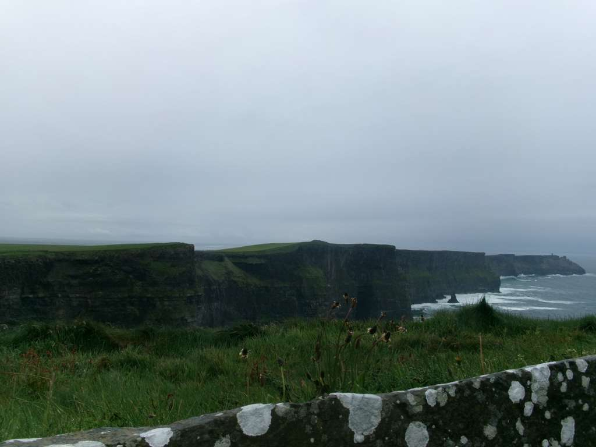
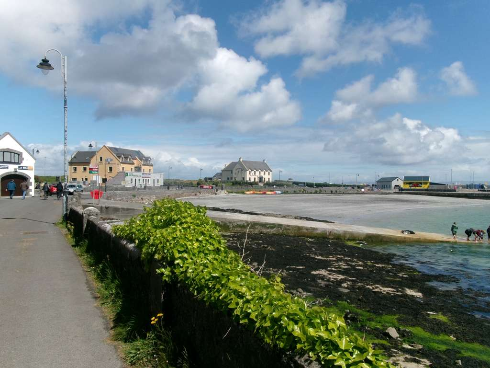
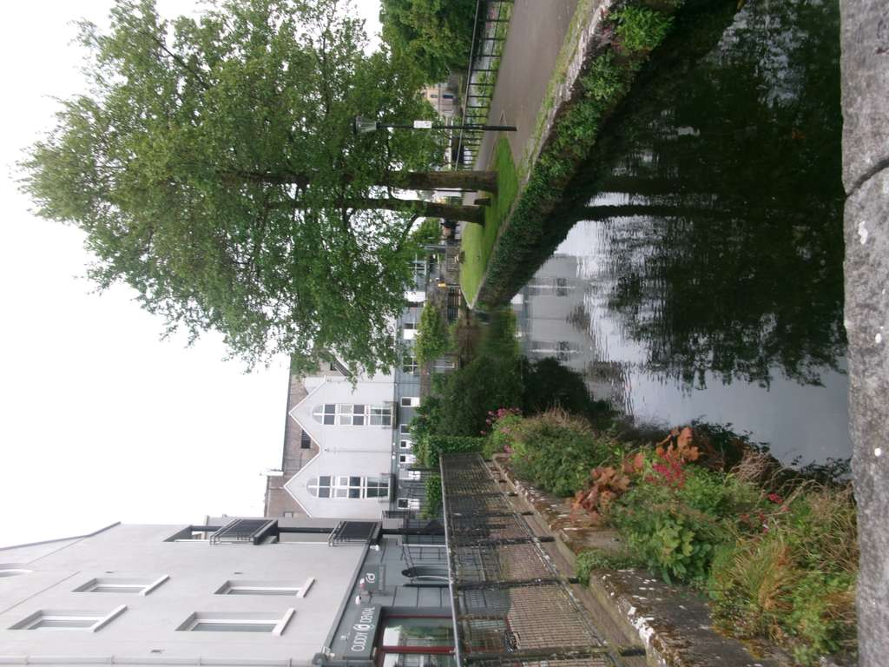
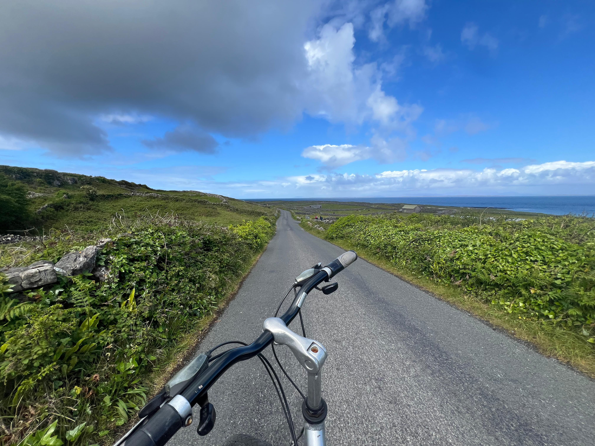
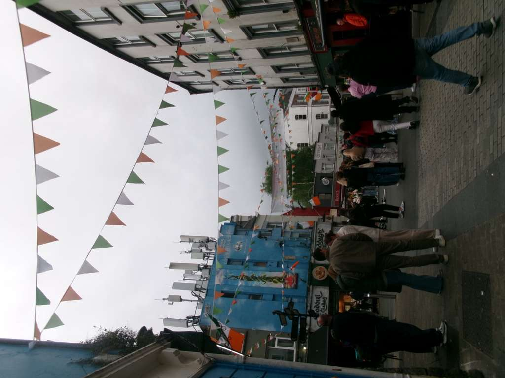
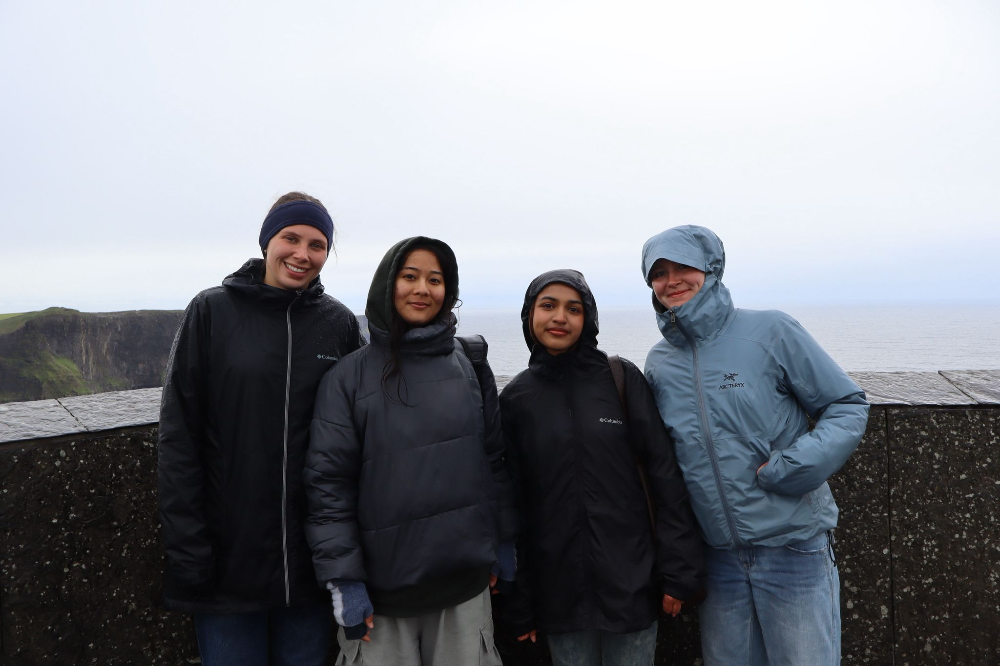

First Impressions
Galway felt very lively and artistic compared to other places I visited. There were many street performers and live events going on. It was smaller than I expected, and the more big activities take place outside of the downtown area such as Cliffs of Mohor.
Things I Noticed
- More tourist around than locals
- Small walkable city
- Many people visited Galway for Bachelor parties
- Hostels provide promoted trips around Galway for a discount
What I Recommend
I recommend walking down the cathedral during the evening, there's a very long bridge walk up ahead where you can see the ducks and swans in the water, and a park nearby...
If you are someone interested in exploring outside the downtown area of Galway, there are many bus tours and day trips available...
Photo Gallery









